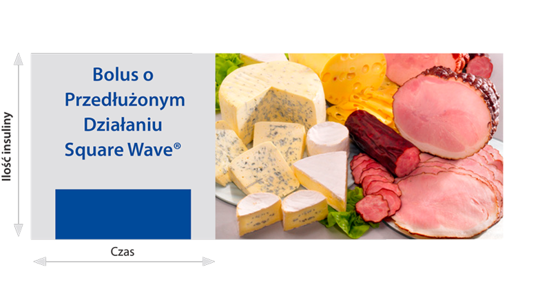

Bolus o Przedłużonym Działaniu, Square Wave® daje możliwość podawania dawki insuliny przez
pewien ustawiony przez użytkownika okres czasu, np. 3 jednostki insuliny przez 2 godziny (max
8 godzin). Ten rodzaj bolusa można stosować, jeśli użytkownik chciałby spożyć posiłek tylko
białkowo-tłuszczowy, który długo się wchłania i podnosi stężenie glukozy dopiero po jakimś czasie od spożycia posiłku, lub też w przypadku długotrwałego spożywania przekąsek. Może być również
stosowany u osób, u których występuje opóźnione opróżnianie treści żołądka (gastropareza).
